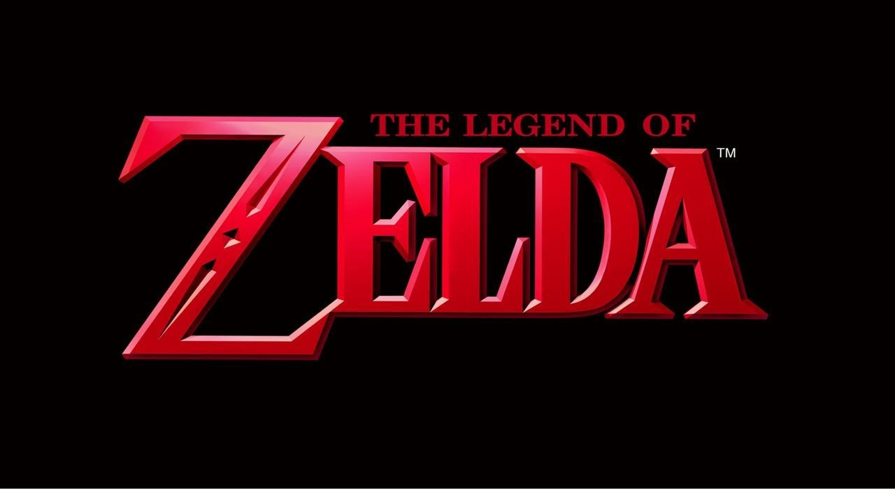
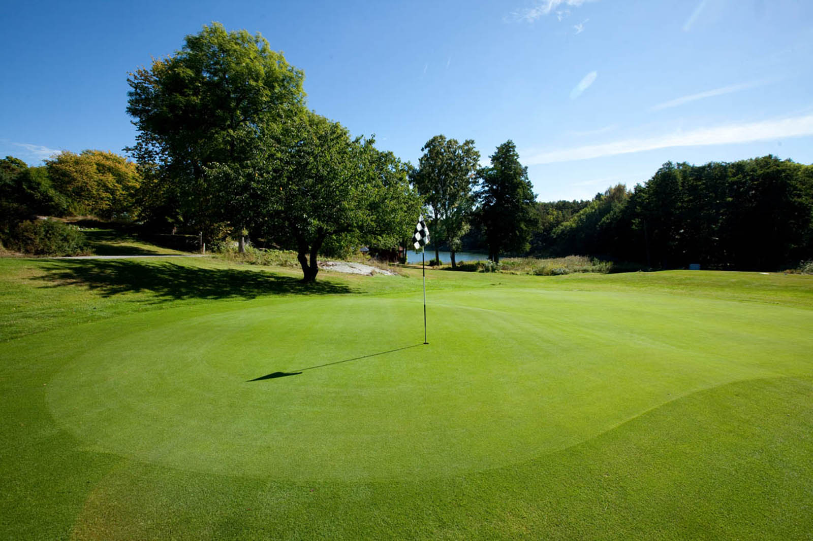

I på denna sida finner du allt jag gillar. Detta kan vara allt från mina favoritspel till sport och annat trevligt.
TV-SPEL
Tv spel är något jag har gillat ända sen jag var liten. I början var det Super Mario 64 som spelades och Zelda men under mina äldre år blev det på PC jag spelade mest på. Nedan komemr mina favoritspel samt en kort motivering.
- 1. Hearts of Iron 4
- 2. Rainbow Six Siege
- 3. Hela Zelda Serien 

Detta spel är ett av de spel som jag har spelat absolut mest under min tid på högstadiet och gymnasiumet. Spelet går ut på att få återuppleva andra världskriget fast du styr ett land som du själv valde. Detta ger spelet oändligt med speltid

Knappt efter Hoi4 kommer R6. Detta är spelet som jag är bäst på, jag har massvis med timmar både på konsol och Pc, jag gillar verkligen banorna som belönar den som vet hur man snabbt och enkelt tar sig från plats A till plats B.
Jag kunde inte bestämma mig vilket Zelda spel jag gillade mest så hela serien fick vara med istället. Jag har bara roliga minnen när jag tänker tillbaka på min tid då jag bara spelade Zelda spelen. Jag har spelat 90% av alla Zelda spel och kan lätt säga att Zelda serien är den bästa spelserien som har funnits
SPORT
Sport är något som jag gillar, för tillfället är det endast två sporter jag är intresserad av
- 1. Amerikansk Fotboll
- 2. Golf 

Amerikansk Fotboll är min favoritsport, anlednignen till detta är för att det är den ultimata lagsporten idag. Där det krävs att varje spelare gör sitt jobb för att hela laget ska lyckas. Kombinera detta med korta, adrenalinfyllda spel så har man den bästa sporten. Mitt Favoritlag är Seattle Seahawks.
Golf är för tillfället den enda sporten jag utför. Golf är en mycket trevlig sport om det går hyffsat men en hemsk sport om det går tungt, det blir då som en spiral då man föröker hämta ikapp sig genom att göra riskfyllda slag som oftare än inte går skit. Men om man har sällskap så är det fortfarande en trevlig golfdag, oavsett väder och poäng.